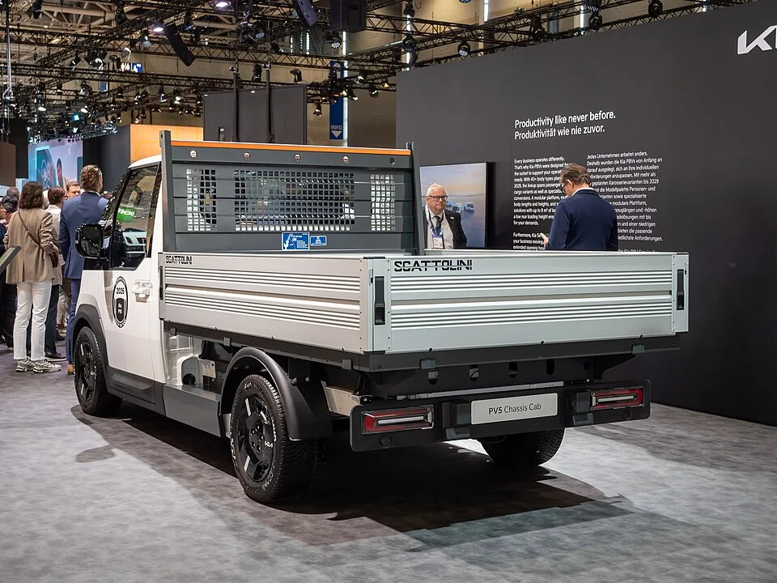
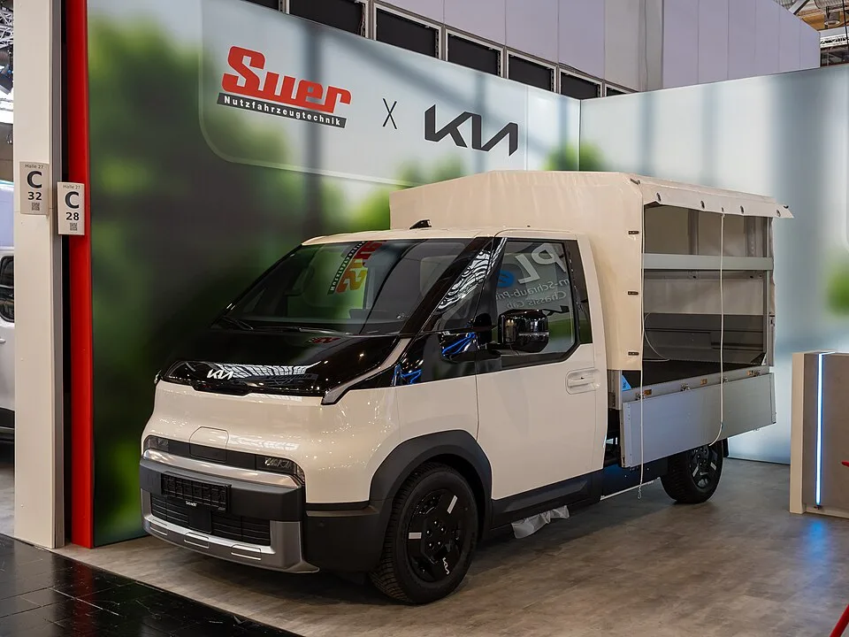
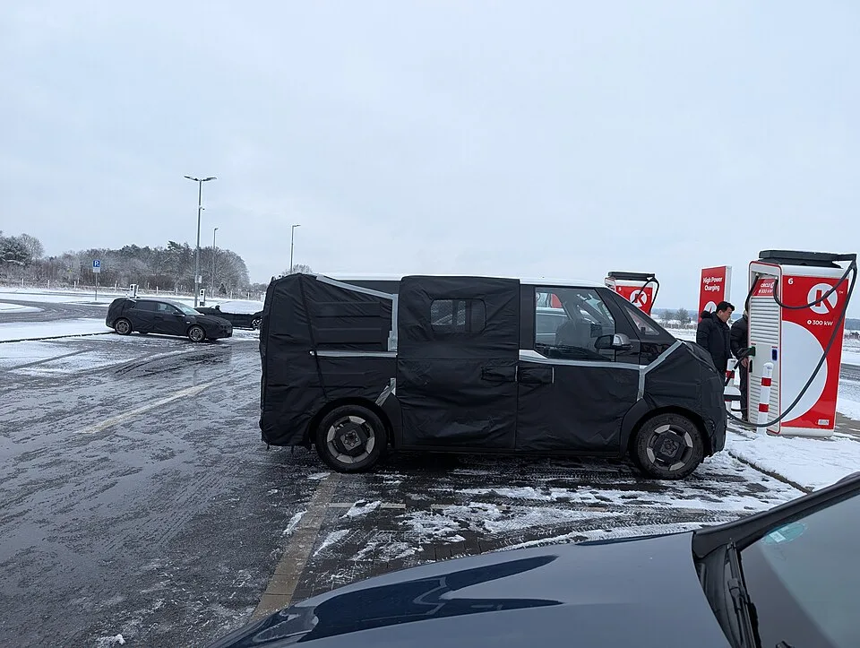
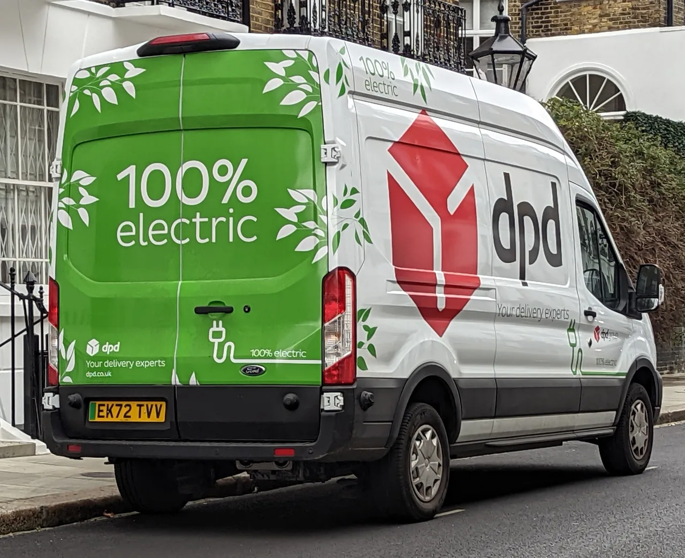
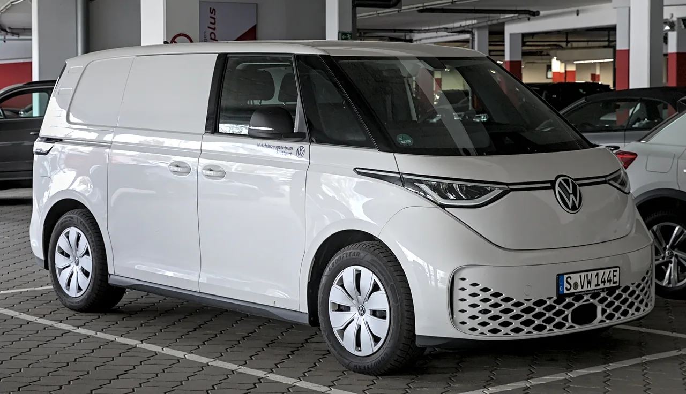

▲ PV5 섀시캡은 운전석 앞부분은 그대로 두고 뒤쪽에 용도별 구조물을 얹는 방식이다 — 사진은 덤프(틸트 적재함) 사양 ⓒ Matti Blume / Wikimedia Commons (CC BY-SA 4.0)
기아가 PV5 라인업의 마지막 퍼즐인 '섀시캡'을 앞세워 영국 상용 전기밴 시장에 본격적으로 진입한다. 오토헤럴드가 28일 보도한 내용에 따르면, 기아는 PV5 카고·크루·섀시캡 세 갈래 라인업의 영국 사양과 가격을 공개하고 현지 판매를 확대하고 있다.
이번 소식의 핵심은 단순한 신차 출시가 아니라 "하나의 섀시로 몇 가지 몸통을 만들어낼 수 있는가"라는 질문이다. PV5 섀시캡은 운전석이 있는 앞부분은 기존 PV5 디자인을 그대로 유지하면서, 뒷부분을 완전히 개방해 용도에 맞는 구조물을 얹을 수 있게 설계됐다. 카프리즘이 이미 다룬 PV5 카고의 플라스틱 격벽, 패신저 트림 가격, 우편 배송용 도입 기사가 '완성차 상태의 PV5'를 다뤘다면, 이번 기사는 완성차가 되기 전 단계, 즉 섀시 자체가 상품이 되는 지점에 초점을 맞춘다.
1. 영국에 정확히 뭐가 들어오나 — 카고·크루·섀시캡 3라인
영국 시장에 투입되는 PV5는 한 가지 차가 아니라 세 갈래 라인업이다. 기아 영국법인이 공개한 초기 사양에 따르면 라인업은 다음과 같이 단계적으로 확장된다.
| 모델 | 초기 투입 사양 | 이후 추가 예정 |
|---|---|---|
| PV5 카고 | L2/H1 | L1/H1, L2/H2 — 2026년 중 순차 도입 |
| PV5 크루 | L2/H1 | - |
| PV5 섀시캡 | L2 | - |
여기서 L(길이)·H(높이) 표기는 차체 크기를 나타내는 상용차 업계의 공통 방식이다. 즉 영국은 처음부터 모든 크기 조합을 다 들여오는 대신, 수요가 가장 많을 것으로 예상되는 조합부터 순차적으로 늘려가는 전략을 택했다.
📍 트림은 단 두 가지로 단순화
영국 사양 PV5는 에센셜(Essential)과 플러스(Plus) 두 트림으로 구성된다. 카고 에센셜 트림 가격은 표준형 51.5kWh 배터리 기준 £27,645, 롱레인지 71.2kWh 배터리 기준 £30,145(부가세 별도)부터 시작한다. 크루와 섀시캡의 구체적인 가격은 별도로 공개될 예정이다.
기아 영국 프레스오피스가 공개한 PV5 카고·크루·섀시캡의 상세 사양 자료는 아래에서 확인할 수 있다. 기아 프레스오피스(영국) 발표 자료 바로가기
2. 섀시캡 단독 사양 — 배터리는 하나, 대신 확실하게
흥미로운 점은 섀시캡의 배터리 구성이다. 카고·크루가 표준형(51.5kWh)과 롱레인지(71.2kWh) 중 선택하는 구조인 반면, 영국 사양 섀시캡은 71.2kWh 배터리와 120kW(163PS) 모터 조합 단일 구성으로 들어온다. 특장 작업 특성상 배터리 용량이 부족하면 상품성 자체가 떨어지기 때문으로 풀이된다.
| 항목 | 내용 |
|---|---|
| 배터리 | 71.2kWh (롱레인지 단일 구성) |
| 모터 출력 | 120kW(163PS) |
| WLTP 최대 주행거리 | 약 416km |
| 급속충전(DC) | 10→80% 약 30분 |
| 완속충전(11kW AC) | 10→100% 약 6시간 30분 |
| 최소 회전반경 | 5.5m — 전장 5m 미만의 컴팩트 설계 |
| 보증 | 차량 7년/10만 마일, 배터리 8년 |

▲ 범퍼 아래 'PV5 Chassis Cab' 명판이 선명하다 — 이탈리아 특장 업체 스카톨리니의 드롭사이드 적재함을 얹은 사례 ⓒ Matti Blume / Wikimedia Commons (CC BY-SA 4.0)
5.5m라는 회전반경 수치는 숫자 이상의 의미를 갖는다. 좁은 도심 골목이나 창고, 공사 현장처럼 회전 공간이 제한된 환경에서 작업해야 하는 상용차 특성상, 이 수치가 실사용성을 좌우하는 핵심 변수이기 때문이다.
3. 어떻게 몸통만 바뀌나 — E-GMP.S 플랫폼의 구조
이 모든 파생 라인업을 가능하게 하는 기반은 'E-GMP.S(Electric-Global Modular Platform for Service)'다. 현대차그룹이 PBV(목적기반차량) 전용으로 처음 개발한 이 플랫폼은, 배터리와 모터·서스펜션 등 주행에 필요한 핵심 부품을 차체 바닥에 낮게 배치하는 '스케이트보드' 구조를 채택했다.
✅ E-GMP.S 구조가 만드는 차이
· 플랫폼을 전면·중앙·후면 세 모듈로 나눠 설계 — 필요한 만큼만 늘리거나 줄일 수 있음
· 운전석이 포함된 전면 캡은 공통 부품으로 유지해 개발·생산 비용 절감
· 후면부는 화물칸, 좌석, 개방형 프레임 등 용도에 맞춰 완전히 다른 구조물을 결합하는 방식
· 배터리를 바닥에 깔아 실내 바닥이 평평(flat-floor)해지고, 적재 공간을 최대한 확보할 수 있음
오토헤럴드 보도에서 언급된 파생 모델 목록만 봐도 이 구조의 확장성을 짐작할 수 있다. 냉동탑차, 푸드트럭, 캠핑카, 덤프(틸트 적재함), 박스밴, 드롭사이드 픽업, 구급차, 서비스 차량 등이 섀시캡을 기반으로 제작 가능한 것으로 소개됐다.

▲ 독일 특장업체 스웨르(Swer)가 PV5 섀시캡으로 제작한 푸드트럭 콘셉트 — 앞쪽 캡은 그대로, 뒤쪽만 완전히 새로운 구조물이다 ⓒ Matti Blume / Wikimedia Commons (CC BY-SA 4.0)
📍 개발 단계부터 위장막을 쓰고 다녔다
PV5는 양산 전 혹한기 테스트 등 개발 과정에서도 위장막을 두른 채 고속도로 휴게소 급속충전기에서 충전 테스트를 거친 것으로 알려졌다. 완성차가 되기 전부터 다양한 환경에서 실사용성을 검증한 셈이다.

▲ 양산 전 위장막을 두른 PV5 테스트카가 독일 니더작센주의 한 고속도로 휴게소 급속충전기에서 충전하는 모습(2025년 2월 촬영) ⓒ Elmschrat / Wikimedia Commons (CC BY-SA 4.0)
4. 영국 상용 전기밴 시장, 경쟁 구도는
PV5가 뛰어드는 영국 상용 전기밴 시장은 이미 강자들이 자리 잡은 곳이다. 포드는 E-트랜짓·E-트랜짓 커스텀을 앞세워 영국 전기밴 시장에서 광고 조회 기준 약 29%의 점유율을 차지하며 가장 큰 존재감을 보이고 있다. 폭스바겐 역시 ID.버즈 카고의 약점으로 지적되던 적재 공간 문제를 해결하기 위해 롱휠베이스 버전을 확대하겠다고 밝힌 상태다. 카프리즘이 앞서 다룬 폭스바겐의 롱휠베이스 대응 기사에서도 이 경쟁 구도를 짚은 바 있다.

▲ 영국 도심을 누비는 DPD 소속 포드 E-트랜짓 — 영국 전기밴 시장에서 광고 조회 기준 약 29% 점유율로 가장 큰 존재감을 가진 경쟁 모델이다 ⓒ Calreyn88 / Wikimedia Commons (CC BY-SA 4.0)
| 모델 | 특징 |
|---|---|
| 포드 E-트랜짓(커스텀 포함) | 영국 전기밴 광고 조회 점유율 약 29%로 1위권, 인지도·서비스망 우위 |
| 폭스바겐 ID.버즈 카고 | 2026년 롱휠베이스 버전 확대 — 적재 공간 약점 보완 시도 |
| 기아 PV5 (카고·크루·섀시캡) | 섀시캡 기반 다품종 파생 모델로 틈새 특장 수요 공략, 2026년 상반기 유럽 전기 C세그먼트 밴 시장 점유율 37%로 1위 |

▲ 폭스바겐 ID.버즈 카고 — 적재 공간 약점을 만회하기 위해 2026년 롱휠베이스 버전 확대를 예고한 또 다른 경쟁 모델 ⓒ Alexander-93 / Wikimedia Commons (CC BY-SA 4.0)
주목할 부분은 PV5가 완성차 대 완성차 경쟁이 아니라, 섀시 대 완성차 경쟁 구도를 만들고 있다는 점이다. 포드·폭스바겐이 정해진 차체로 승부하는 동안, 기아는 섀시캡을 앞세워 특장업체들이 자유롭게 개조할 수 있는 '빈 캔버스'를 시장에 던진 셈이다.
5. PV7까지 이어지는 기아 PBV 로드맵에서 이번 투입의 의미
이번 영국 투입은 기아의 PBV(목적기반차량) 전략 전체에서 봤을 때도 의미가 있다. 기아는 2026년 9월 14일 독일 하노버 IAA 트랜스포테이션에서 PV5보다 큰 상용차 PV7을 공개했다. PV7 역시 PV5와 같은 E-GMP.S 플랫폼을 기반으로 하며, 평평한 바닥(flat-floor) 설계로 더 넓은 적재·거주 공간을 확보한 것이 특징이다.
✅ 기아 PBV 라인업 로드맵
· PV5 — 2025년부터 생산·판매 중, 카고·크루·섀시캡·승객용(7인승 포함)·휠체어 탑승형 등 10종 이상의 차체로 확장
· PV5 섀시캡 — 2026년 영국 등 유럽 시장에 본격 투입, 특장업체와의 협업을 통한 파생 모델 확대
· PV7 — 2026년 9월 IAA 트랜스포테이션에서 공개, 더 큰 상용 전기 LCV 세그먼트 공략
· 공통 기반 — 두 모델 모두 E-GMP.S 플랫폼을 공유해 부품·생산 효율을 극대화
즉 PV5 섀시캡의 영국 투입은 단발성 신차 출시가 아니라, 하나의 플랫폼으로 소형부터 대형까지 상용차 스펙트럼 전체를 채우려는 기아 PBV 전략의 중간 단계로 볼 수 있다. PV5가 특장업체들과의 협업 사례를 얼마나 늘리느냐가, 뒤이어 나올 PV7의 시장 안착에도 영향을 줄 가능성이 크다.
기아의 PV7 관련 공식 발표 전문은 아래에서 확인할 수 있다. Kia Worldwide Newsroom PV7 발표 바로가기
6. 요약
기아는 PV5 카고·크루·섀시캡 세 갈래 라인업을 앞세워 영국 상용 전기밴 시장에 본격 진입한다. 초기에는 카고 L2/H1, 크루 L2/H1, 섀시캡 L2로 시작해 2026년 중 카고 L1/H1·L2/H2를 추가하며 라인업을 넓힐 예정이다. 카고 에센셜 트림은 £27,645부터, 섀시캡은 71.2kWh 배터리·120kW 모터 단일 구성으로 공급된다.
이 라인업을 가능케 하는 것은 PBV 전용 E-GMP.S 플랫폼이다. 운전석이 있는 앞부분은 공통으로 유지하고, 뒷부분만 냉동탑차·푸드트럭·캠핑카·덤프·박스밴·드롭사이드 픽업·구급차 등 용도에 맞게 바꿔 끼우는 구조다. 포드 E-트랜짓, 폭스바겐 ID.버즈 카고가 이미 자리 잡은 영국 시장에서, 기아는 완성차가 아닌 '섀시'를 상품화하는 전략으로 틈새를 공략하고 있다.
2026년 9월 공개된 대형 상용차 PV7까지 감안하면, 이번 섀시캡의 영국 투입은 기아가 소형부터 대형까지 하나의 플랫폼으로 상용차 스펙트럼 전체를 채우려는 PBV 전략의 중간 단계로 읽힌다.